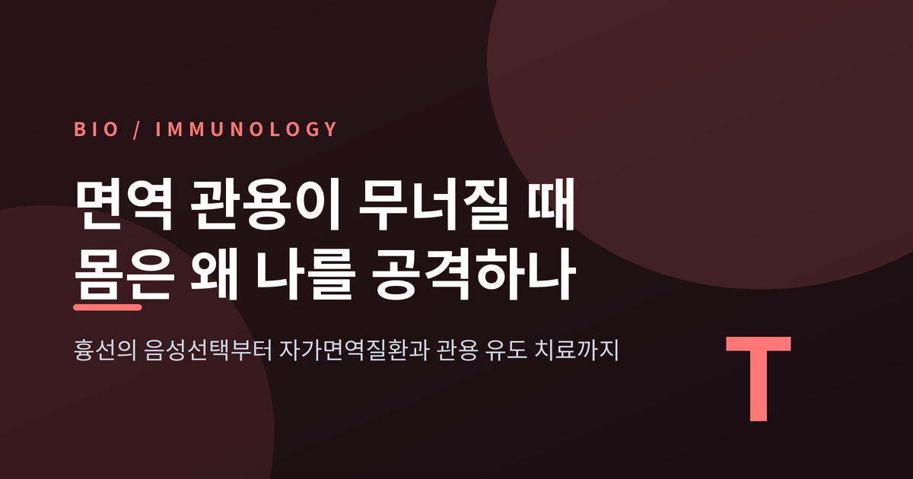
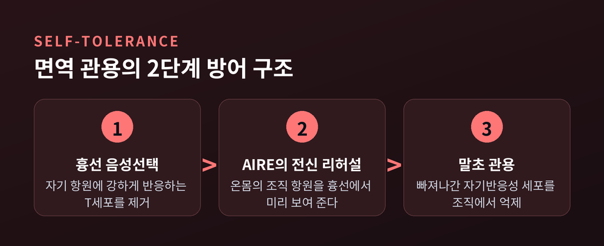
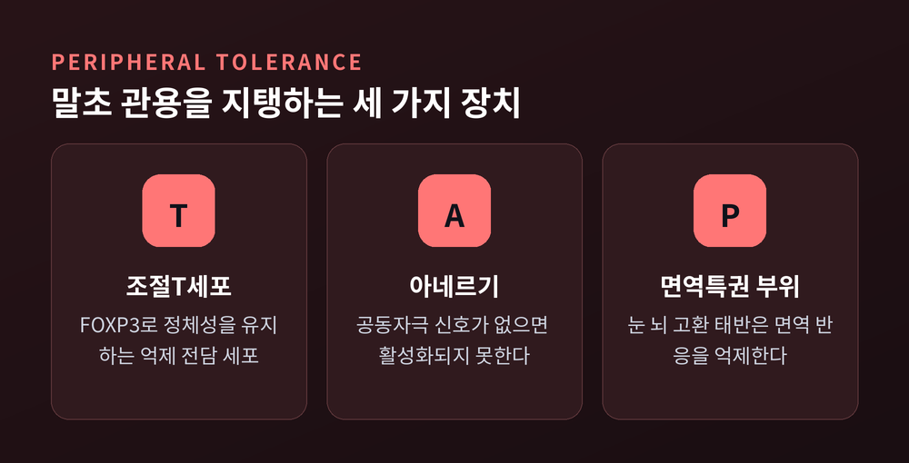
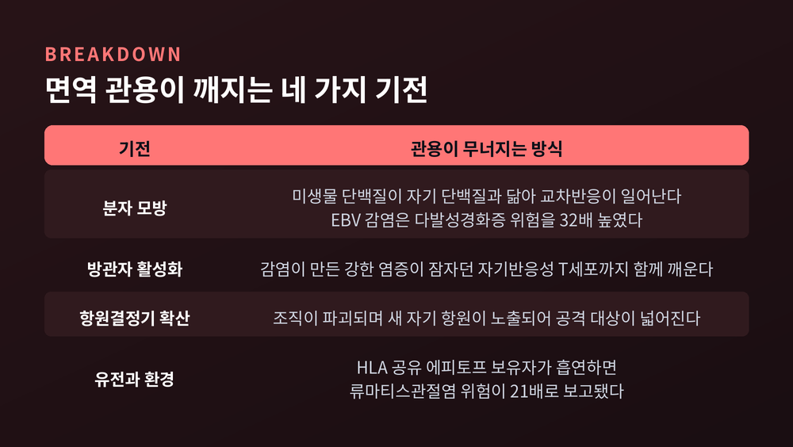
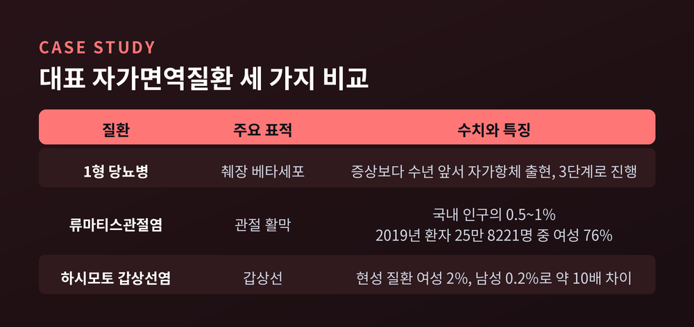
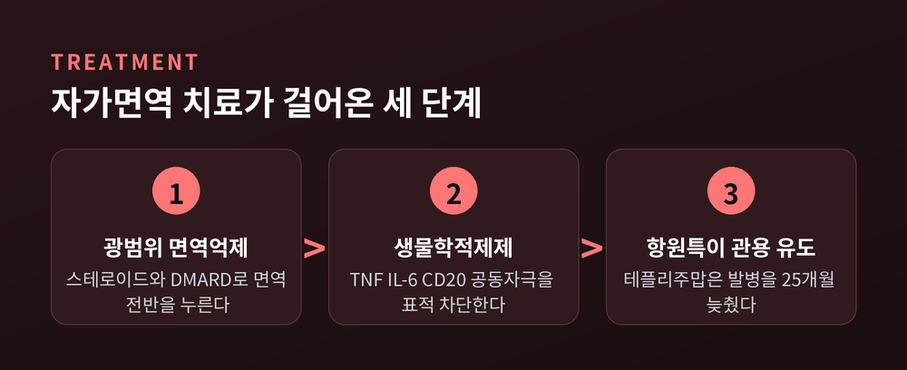

이번 글에서는 면역 관용(self-tolerance)이라는 개념을 정리해 보겠습니다. 우리 몸의 면역계가 어떻게 자기 자신을 공격하지 않도록 훈련받는지, 그리고 그 훈련이 실패했을 때 왜 자가면역질환이 생기는지를 순서대로 살펴보겠습니다. 흉선에서 벌어지는 일부터 최근의 치료 연구까지 다룹니다.
면역계의 임무는 단순해 보입니다. 침입자를 찾아내 제거하는 일입니다.
그런데 여기에 조건이 하나 붙습니다. 내 몸의 세포는 건드리지 말아야 합니다.
이것이 생각보다 훨씬 까다로운 요구입니다. 세균의 단백질과 사람의 단백질은 화학적으로 같은 아미노산으로 만들어집니다. 면역세포 입장에서 "이건 남, 저건 나"를 구분할 절대적 표식이 따로 없습니다.
그래서 면역계는 다른 방식을 택했습니다. 태어난 순간부터 자기 몸의 목록을 통째로 외우게 하는 것입니다. 이렇게 자기 조직을 공격하지 않는 상태를 면역 관용(immune tolerance)이라 부릅니다.
관용은 두 층으로 되어 있습니다. 림프구가 만들어질 때 걸러내는 중추 관용, 그리고 그물을 빠져나간 세포를 조직에서 다시 붙잡는 말초 관용입니다. 자가면역질환은 이 두 층이 함께 뚫렸을 때 나타납니다.

T세포는 골수에서 태어나 가슴뼈 뒤쪽의 흉선(thymus)으로 이동합니다. 여기서 교육을 받습니다.
교육의 핵심은 시험이 아니라 탈락입니다. 자기 조직의 항원에 강하게 달라붙는 T세포 클론은 그 자리에서 세포자멸사로 제거됩니다. 이를 음성선택(negative selection) 또는 클론 결실이라 합니다. 위험한 세포를 말초로 내보내지 않기 위한 장치입니다.
그런데 여기서 이상한 점이 하나 있습니다. 흉선 안에는 인슐린도, 갑상선 단백질도, 망막 단백질도 원래 없습니다. 없는 항원에 반응하는 세포를 어떻게 걸러낼까요.
답이 AIRE(Autoimmune Regulator, 자가면역조절인자) 유전자입니다.
AIRE는 흉선 수질 상피세포에서 몸 곳곳의 조직특이 항원을 광범위하게 발현시킵니다. 인슐린도, 갑상선 단백질도 흉선 안에서 잠깐 만들어 보여 줍니다. 전신의 자기소개서를 흉선 강당에 펼쳐 놓는 셈입니다. 여기에 반응하는 T세포는 제거되거나 조절T세포로 전환됩니다.
이 유전자 하나가 얼마나 결정적인지는 고장 났을 때 드러납니다. AIRE 변이는 APECED라는 질환을 일으킵니다. 여러 내분비 장기를 동시에 공격하는 다기관 자가면역입니다. 생쥐에서 이 유전자를 없애도 같은 일이 벌어집니다.
부품 하나가 빠지면 관용 전체가 무너진다는 사실이, 사람과 동물 양쪽에서 확인된 것입니다.
흉선의 검문은 완벽하지 않습니다. 자기반응성 T세포 일부는 반드시 빠져나갑니다. 그래서 두 번째 방어선이 필요합니다.
첫째는 조절T세포(Treg)입니다. CD4+ FOXP3+ 표지를 가진 이 세포들은 말초 관용의 중심입니다. FOXP3는 조절T세포의 마스터 전사인자로, 이 유전자의 발현이 유지되어야 세포의 정체성과 억제 기능이 유지됩니다. 억제 수단도 다양합니다. 조절 사이토카인 분비, 주변 영양분 선점, 항원제시세포 길들이기, 직접적인 세포 용해까지 동원합니다.
FOXP3가 망가지면 IPEX 증후군이 됩니다. 기능하는 조절T세포가 아예 없어 관용이 통째로 붕괴하는 희귀 유전질환입니다.
둘째는 아네르기(anergy), 무반응 상태입니다. T세포가 켜지려면 신호가 두 개 필요합니다. 항원을 알아보는 신호와, "지금 위험 상황이 맞다"는 공동자극 신호입니다. 항원만 보이고 위험 신호가 없으면 T세포는 활성화되지 않고 기능적으로 마비됩니다. 자물쇠는 열렸는데 시동이 걸리지 않는 상태에 가깝습니다.
셋째는 면역특권 부위(immune privilege)입니다. 한번 손상되면 재생이 어려운 조직은 아예 면역 반응 자체를 억제하는 특별 구역으로 관리됩니다. 눈 앞방, 혈액뇌장벽 뒤의 중추신경계, 고환과 난소 일부, 부신 피질, 모낭, 그리고 태반이 여기 해당합니다.
이 특권이 깨지면 어떻게 되는지 보여 주는 사례가 교감성 안염입니다. 한쪽 눈이 외상을 입어 격리돼 있던 눈 항원이 노출되면, 멀쩡한 반대쪽 눈까지 면역계가 공격하기 시작합니다.

관용이 무너지는 방식은 하나가 아닙니다. 크게 네 갈래로 정리됩니다.
분자 모방(molecular mimicry)이 가장 널리 알려진 경로입니다. 미생물의 단백질과 사람의 단백질이 우연히 닮으면, 병원체를 잡으려고 만든 항체와 T세포가 자기 조직까지 공격합니다.
대표 증거는 다발성경화증입니다. 2022년 Science에 실린 연구는 미군 1,000만 명을 추적해 엡스타인-바 바이러스(EBV) 감염이 다발성경화증 위험을 32배 높인다는 결과를 보고했습니다. 같은 해 Nature에는 EBV의 EBNA1 단백질 일부가 중추신경계 단백질 GlialCAM과 닮았고, 환자 뇌척수액 B세포가 만든 항체가 양쪽에 교차반응한다는 논문이 실렸습니다.
다만 최근에는 분자 모방만으로 전부 설명되지는 않는다는 반론도 나옵니다. 잠복 감염된 B세포의 지속 같은 다른 기전이 함께 작동한다는 논의가 진행 중입니다.
방관자 활성화(bystander activation)는 조금 다릅니다. 병원체와 자기 항원이 닮지 않아도 됩니다. 감염으로 염증이 크게 일면 항원제시세포가 강하게 활성화되고, 그 소란 속에서 잠자던 자기반응성 T세포가 곁다리로 함께 깨어납니다.
항원결정기 확산(epitope spreading)은 불이 붙은 뒤의 이야기입니다. 조직이 파괴되면서 숨어 있던 자기 항원이 새로 노출되고, 공격 대상이 하나에서 여럿으로 번집니다. 자가면역질환이 시간이 갈수록 다루기 어려워지는 이유가 여기 있습니다.
정리하면 분자 모방이 불씨를 지피고, 방관자 활성화와 항원결정기 확산이 불길을 유지하는 구조입니다.

네 번째 갈래는 유전적 소인입니다. 그중에서도 HLA(사람백혈구항원)가 압도적입니다.
HLA는 T세포에게 항원 조각을 얹어 보여 주는 접시입니다. 접시 모양이 다르면 어떤 조각이 보이는지가 달라지고, 그것이 위험을 좌우합니다.
류마티스관절염에서는 HLA-DRB1의 공유 에피토프(shared epitope)가 가장 강력한 유전 위험 인자입니다. DRB1 사슬의 세 번째 초가변 부위에 있는 보존된 아미노산 다섯 개를 가리킵니다. 다만 이 부위가 질환 자체보다 항CCP 자가항체 생성의 위험 인자에 가깝다는 해석도 있어, 아직 논의가 정리되지는 않았습니다.
여기에 환경이 겹치면 위험이 급격히 올라갑니다. 흡연은 폐에서 PAD2 효소 발현을 높여 단백질의 시트룰린화를 늘립니다. 흡연자의 기관지폐포세척액 세포에서는 시트룰린화 단백질이 검출되지만, 비흡연자에서는 나오지 않았습니다.
변형된 자기 단백질을 공유 에피토프를 가진 HLA가 T세포에 보여 주면 반응이 시작됩니다. 실제로 흡연력이 있고 공유 에피토프 유전자를 두 벌 가진 사람은, 비흡연·비보유자보다 류마티스관절염 위험이 21배 높다고 보고되었습니다.
유전자는 바꿀 수 없습니다. 환경은 일부 바꿀 수 있습니다. 이 대비가 자가면역 예방 연구가 환경 요인에 집중하는 이유이기도 합니다.
1형 당뇨병은 췌장 베타세포가 표적입니다. 인슐린 자가항체, GAD65 항체, IA-2 항체, ZnT8 항체 같은 지표로 추적하며, 여러 항체가 동시에 나타날 때 발병 예측력이 가장 높습니다. 중요한 점은 베타세포 파괴가 임상 증상보다 수년 앞서 시작된다는 것입니다. 자가면역만 있고 혈당은 정상인 1단계, 혈당이 흔들리기 시작하는 2단계를 지나 3단계에서 증상이 나타납니다.
류마티스관절염은 관절 활막의 만성 염증입니다. 국내에서는 인구 100명 중 0.5~1명 수준으로 보고됩니다. 2019년 기준 병원을 찾은 환자는 25만 8,221명이었고, 그중 여성이 19만 5,432명으로 76%를 차지했습니다. 30대 후반에서 50대 사이 발병이 많습니다.
하시모토 갑상선염은 성별 편중이 가장 극단적인 사례입니다. 뚜렷한 증상이 있는 경우 여성 약 2%, 남성 약 0.2%로 10배 차이가 납니다. 자료에 따라 4배, 7~10배 등 수치가 갈리는데, 현성 질환을 보느냐 발생률을 보느냐에 따라 달라지기 때문입니다. 무증상 단계까지 넣으면 여성의 약 20%로 추정하는 보고도 있습니다.

전체 규모부터 보겠습니다. 자가면역질환은 미국에서 인구의 5~8%가량이 가진 것으로 추정되어 왔습니다. 암과 심혈관질환에 이어 세 번째로 흔한 질환군이라는 평가도 있습니다.
다만 수치 편차가 큽니다. 2005년 NIH 추정은 1,470만~2,350만 명, 2009년 연구는 인구의 7.6~9.4%, 2025년 전자의무기록 기반 분석은 4.6%였습니다. 설문 기반 추정과 실제 진단코드 집계가 다르기 때문입니다. 질환의 개수조차 "약 150개"와 "105개"로 갈립니다.
그럼에도 흔들리지 않는 숫자가 하나 있습니다. 진단자의 약 80%가 여성입니다. 여성은 남성보다 자가면역질환에 걸릴 확률이 약 2.7배 높습니다.
오랫동안 이 편중은 성호르몬으로 설명되어 왔습니다. 사춘기, 임신, 폐경의 변화가 위험과 중증도를 높인다는 것입니다.
2024년 Cell에 실린 연구는 다른 후보를 제시했습니다. 여성에게만 있는 긴 비암호 RNA Xist입니다. Xist는 두 개의 X염색체 중 하나를 불활성화해 유전자 용량을 맞추는 역할을 하는데, 이때 만들어지는 Xist 리보핵단백질 복합체에 자가항원이 될 만한 성분이 다수 포함되어 있었습니다.
연구팀이 침묵 기능을 없앤 Xist를 수컷 생쥐에 발현시키자 자가항체가 생겼습니다. 성호르몬과 성염색체 수를 배제하고도 자가면역이 유도된 것입니다.
예전에는 성호르몬 하나로 설명하려 했습니다. 지금은 X염색체 자체가 용의선상에 올라 있습니다.
치료의 역사는 정밀도를 높여 온 과정으로 읽힙니다.
1세대는 광범위 면역억제였습니다. 스테로이드와 메토트렉세이트처럼 면역 반응 전반을 눌러 염증을 가라앉히는 방식입니다. 효과는 확실하지만, 자기 조직을 공격하는 면역만 골라 끄지 못합니다.
2세대는 생물학적제제입니다. 류마티스관절염에서 TNF 억제제가 처음 허가된 뒤 아바타셉트, 리툭시맙, 토실리주맙이 뒤따랐습니다. 리툭시맙은 B세포의 CD20을 표적으로 삼고, 토실리주맙은 IL-6 수용체를 막습니다. 흥미로운 것은 아바타셉트입니다. 앞서 말한 공동자극 신호, 곧 "신호 2"를 차단하는 약입니다. 몸이 원래 쓰던 아네르기 기전을 약으로 흉내 낸 셈입니다.
대가도 분명합니다. 감염 위험이 올라갑니다. 결핵, 폐렴구균, 리스테리아 같은 세균 감염과 B형·C형 간염, 대상포진의 재활성화가 보고됩니다. 토실리주맙과 리툭시맙은 억제가 더 깊어 TNF 억제제보다 감염률이 높다는 자료가 있습니다.
3세대는 항원특이 관용 유도를 지향합니다. 면역을 끄는 대신, 특정 항원에 대해서만 다시 관용을 가르치겠다는 발상입니다.
가장 앞선 사례가 테플리주맙입니다. T세포의 CD3를 표적으로 하는 단클론항체로, 임상 전 단계(2기) 1형 당뇨병 환자에서 발병을 지연시키는 용도로 승인받은 첫 질병조절 치료제입니다. TrialNet 연구에서 증상성 당뇨병으로의 진행을 중앙값 25개월 늦췄고, 연장 분석에서는 참가자의 36%가 5년 뒤에도 임상적 당뇨병이 없거나 미진단 상태였습니다.
CAR-T 세포치료도 자가면역으로 넘어왔습니다. 원래 혈액암 치료 기술인데, 자가항체를 만드는 B세포를 뿌리째 제거한다는 발상입니다. 2025년 미국류마티스학회에서는 CD19와 BCMA를 동시에 겨냥하는 이중표적 CAR-T의 예비 결과가 발표되었고, 중증 불응성 루푸스 환자에서 자가항체가 뚜렷이 줄며 임상적 관해에 도달한 사례가 보고되었습니다.
물론 아직 소수 환자를 대상으로 한 초기 연구입니다. 장기 안전성과 재발률, 비용과 접근성은 확립되지 않았습니다. 기대를 걸되 결론을 앞당기지는 않는 편이 정확합니다.

정리하면 이렇습니다.
자가면역은 면역계가 갑자기 난폭해져서 생기는 일이 아닙니다. 흉선의 검문, 조절T세포의 감시, 면역특권이라는 격리 구역 — 겹겹의 안전장치가 조금씩 어긋났을 때 드러나는 결과입니다. 그리고 그 어긋남에는 유전자, 감염, 흡연 같은 여러 요인이 함께 관여합니다.
아직 모르는 부분이 많습니다. 왜 같은 유전자를 가진 사람 중 누군가만 발병하는지, 왜 여성에게 그토록 편중되는지도 이제야 실마리를 찾는 중입니다.
다만 방향은 분명해 보입니다. 면역을 억누르는 시대에서, 면역에게 다시 가르치는 시대로 넘어가는 중입니다.
몸이 나를 공격한다는 말은 무섭게 들립니다. 그러나 그 이면에는 매일 조용히 작동하며 나를 지켜 온 관용의 체계가 있습니다. 자가면역을 이해한다는 것은 결국, 평소에는 보이지 않던 그 체계를 처음으로 마주하는 일이라고 생각합니다.
참고: 이 글은 면역학의 기본 개념과 공개된 연구 자료를 정리한 정보성 글이며, 의학적 진단이나 치료에 대한 조언이 아닙니다. 관절 통증, 만성 피로, 원인 모를 발열, 갑상선 이상 소견 등이 지속된다면 자가 판단하지 마시고 류마티스내과·내분비내과 등 전문의의 진료를 받으시길 권합니다. 치료 중이신 분은 담당 의료진의 지시를 우선하시기 바랍니다.